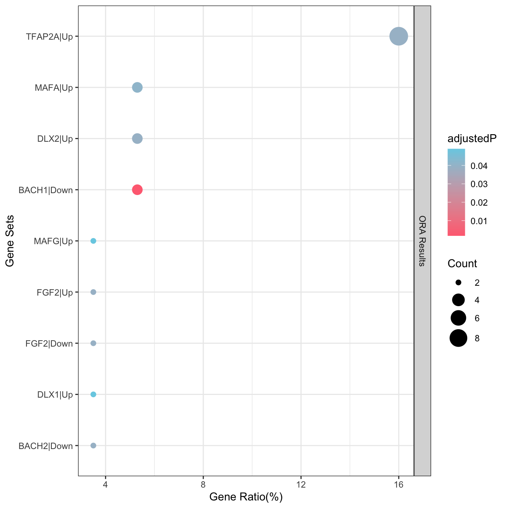
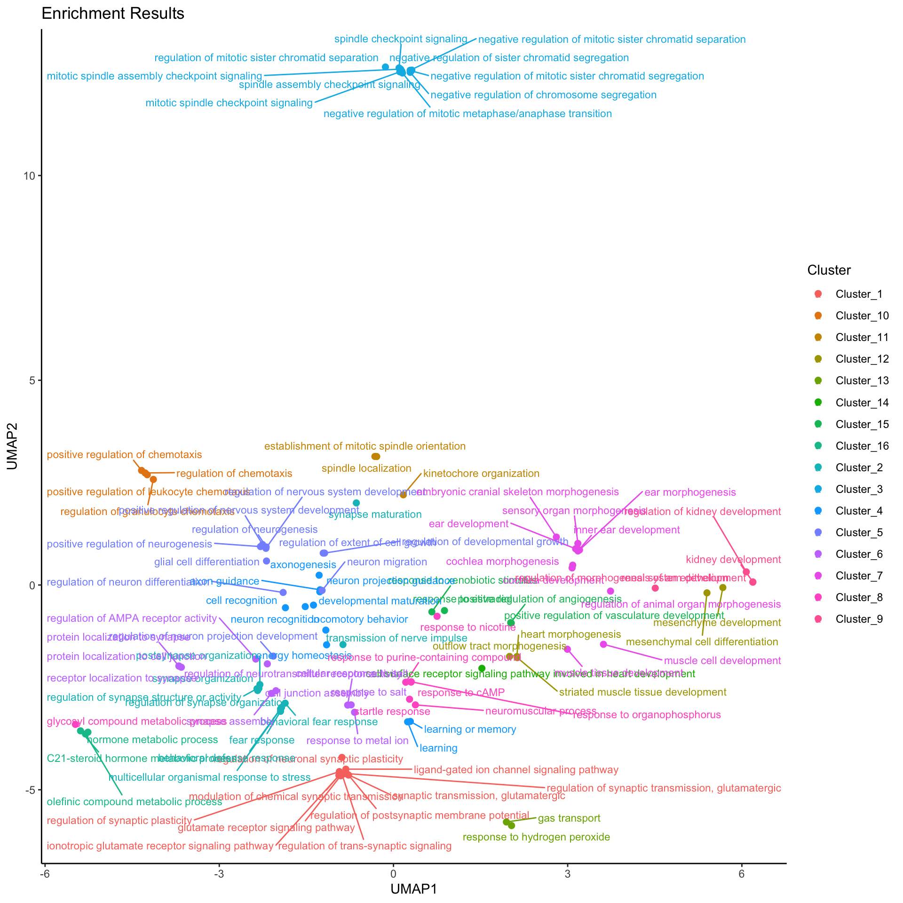

graph LR
M[genes]
N[genes with weights]
subgraph Enrichment Analysis
A[egt_enrichment_analysis]
B[egt_gsea_analysis]
end
subgraph Pathway Databases
D[database_* funcs]
end
subgraph Visualize results
P1[egt_plot_results]
P2[egt_plot_umap]
end
subgraph egt_recluster_analysis
K1[Pretty table]
CC[cluster modules]
MG[gene modules]
end
subgraph Pathway Act. and TF infer
I[egt_infer]
end
M --> A
N --> B
D --> A
D --> B
A --> C[Enriched Result]
B --> C
C --> CC
C --> MG
C --> P1
CC --> K1
MG --> K1
CC --> P1
CC --> P2
MG --> I
EnrichGT Documents
Overview
What is EnrichGT?
| EnrichGT means enriching previously enriched results (\(E^2_{\text{enrich}}\)) into great tables and more … |
|---|
| Efficient C++-based functions for rapid enrichment analysis |
| Simple input format, empowering non-pro users |
| Re-clustering of enriched results provides clear and actionable insights |
| User-friendly HTML output that is easy to read and interpret |
| Do a series of things just in ONE package |
The functions from EnrichGT are starting with “egt_” or “database_”.
Install EnrichGT
install.packages("pak")
pak::pkg_install("ZhimingYe/EnrichGT")or
install.packages("devtools")
library(devtools)
install_github("ZhimingYe/EnrichGT")The AnnotationDbi, fgsea, reactome.db and GO.db were from BioConductor and might be slow to install. If you can’t install, please re-check your web connections or update your R and BioConductor, or use Posit Package Manager to install when using old R.
Meet EnrichGT
Important
See package function page for further information (For example, how to use a function)
You can use ? function to get further help when installed.
?egt_recluster_analysisIn most examples of this document, we use a result table of DEG analysis DEG.csv. The gene symbols of DEG.csv is on the first column without column name. In default read_csv() convert the unamed column name to ...1. So DEGtable$...1 refers to gene symbols.
Core Function
Enrichment of genes
This is a C++ accelerated over representation analysis tool. The only things you need is your favourite gene symbols. If is all prepared, then load a database, run it!
The difference from other tools
Compared to the most popular clusterProfiler, the functions of EnrichGT differ slightly. This is mainly to accommodate wet lab researchers. First, most beginners are confused by the default input of clusterProfiler, which is “ENTREZ ID.” Most people familiar with biology are used to Gene Symbols, and even Ensembl IDs are not widely known, let alone a series of seemingly random numbers. Therefore, EnrichGT uses Gene Symbol as the default input, seamlessly integrating with most downstream results from various companies, making it more suitable for non-experts in the lab.
Second, clusterProfiler outputs an S4 object, which may be too complex for beginners (this is no joke); whereas EnrichGT outputs a simple table. The time of non-experts is precious, so I made these two adjustments. The only downside is that the GSEA peak plot is difficult to generate, but in reality, we focus more on NES and p-values, and in this case, bar plots are more convincing.
Furthermore, The pre-processing step of the hypergeometric test in EnrichGT’s ORA function (which determines overlap) is accelerated using hash tables in C++, making it over five times faster than clusterProfiler::enricher(), which is a pure R implementation.
res <- egt_enrichment_analysis(genes = DEGtable$Genes,
database = database_GO_BP(org.Hs.eg.db))
res <- egt_enrichment_analysis(genes = c("TP53","CD169","CD68","CD163",
"You can add more genes"),
database = database_Reactome(org.Hs.eg.db))
res <- egt_enrichment_analysis(genes = c("TP53","CD169","CD68","CD163",
"You can add more genes"),
database = database_from_gmt("MsigDB_Hallmark.gmt"))
Example of ORA
library(dplyr)
library(tibble)
library(org.Hs.eg.db)
library(gt)
library(testthat)
library(withr)
library(EnrichGT)
library(readr)DEGexample <- read_csv("./DEG.csv")New names:
Rows: 15903 Columns: 7
── Column specification
──────────────────────────────────────────────────────── Delimiter: "," chr
(1): ...1 dbl (6): baseMean, log2FoldChange, lfcSE, stat, pvalue, padj
ℹ Use `spec()` to retrieve the full column specification for this data. ℹ
Specify the column types or set `show_col_types = FALSE` to quiet this message.
• `` -> `...1`DEGexample_UpReg <- DEGexample |> dplyr::filter(pvalue<0.05,log2FoldChange>0.7)
ora_result <- egt_enrichment_analysis(genes = DEGexample_UpReg$...1,database = database_GO_BP(org.Hs.eg.db))
✔ success loaded database, time used : 14.436637878418 sec.
✔ Done ORA in 0.131885051727295 sec.head(ora_result) ID Description GeneRatio
1 GO:0035249 synaptic transmission, glutamatergic 19/457
2 GO:0051966 regulation of synaptic transmission, glutamatergic 16/457
3 GO:0050804 modulation of chemical synaptic transmission 39/457
4 GO:0099177 regulation of trans-synaptic signaling 39/457
5 GO:0050808 synapse organization 36/457
6 GO:0048168 regulation of neuronal synaptic plasticity 12/457
BgRatio pvalue p.adjust qvalue
1 111/18870 2.055491e-11 8.053235e-08 8.409591e-05
2 79/18870 5.742011e-11 8.053235e-08 8.409591e-05
3 489/18870 7.257625e-11 8.053235e-08 8.409591e-05
4 490/18870 7.711980e-11 8.053235e-08 8.409591e-05
5 483/18870 2.512088e-09 2.098598e-06 1.109159e-03
6 56/18870 7.497368e-09 4.183196e-06 1.109159e-03
geneID
1 ATP1A2/GRIA4/GRID2/GRIK2/GRIK3/GRIN1/GRIN2A/GRIN2B/GRIN2D/GRM1/GRM5/GRM8/DGKI/NRXN1/NLGN1/UNC13A/MAPK8IP2/CACNG5/UNC13C
2 ATP1A2/GRIK2/GRIK3/GRIN1/GRIN2A/GRIN2B/GRIN2D/GRM1/GRM5/GRM8/DGKI/NRXN1/NLGN1/UNC13A/MAPK8IP2/CACNG5
3 ACHE/APOE/ATP1A2/CA2/CAMK2B/CDC20/GFAP/GRIA4/GRID2/GRIK2/GRIK3/GRIN1/GRIN2A/GRIN2B/GRIN2D/GRM1/GRM5/GRM8/HRAS/MAP1B/NTRK2/SLC6A1/CNTN2/VGF/WNT5A/INA/DGKI/DLGAP1/NRXN1/RIMS3/NMU/NLGN1/UNC13A/MAPK8IP2/ERC2/CACNG5/LRFN2/UNC13C/SHISA9
4 ACHE/APOE/ATP1A2/CA2/CAMK2B/CDC20/GFAP/GRIA4/GRID2/GRIK2/GRIK3/GRIN1/GRIN2A/GRIN2B/GRIN2D/GRM1/GRM5/GRM8/HRAS/MAP1B/NTRK2/SLC6A1/CNTN2/VGF/WNT5A/INA/DGKI/DLGAP1/NRXN1/RIMS3/NMU/NLGN1/UNC13A/MAPK8IP2/ERC2/CACNG5/LRFN2/UNC13C/SHISA9
5 ACHE/APOE/KIF1A/CAMK2B/CDC20/CDH6/CTNNA2/DSCAM/GAP43/GRID2/GRIN2B/GRM5/MAP1B/NRCAM/NTRK2/RAC3/SIX1/SLC6A1/CNTN2/WNT5A/INA/NRXN1/NLGN1/UNC13A/ERC2/IL1RAPL2/SEZ6L2/TREM2/LRFN2/IGSF9/BCAN/SYNDIG1/DNER/ADGRF1/LHFPL4/UNC13C
6 APOE/CAMK2B/GRIK2/GRIN1/GRIN2A/GRIN2B/GRIN2D/GRM5/HRAS/CNTN2/VGF/SHISA9
Count
1 19
2 16
3 39
4 39
5 36
6 12
Have many sources of genes?
This function also support many groups of genes, you can input a list.
# For many groups of genes
res <- egt_enrichment_analysis(list(Macrophages=c("CD169","CD68","CD163"),
Fibroblast=c("COL1A2","COL1A3"),"You can add more groups"),
database = database_from_gmt("panglaoDB.gmt"))Enrichment of weighted genes (GSEA)
Genes with specific weights (e.g. the log2FC) can use GSEA method. It should input a pre-ranked geneset. This use C++ accelerated fgsea::fgsea() as backend, so it is also very fast.
This provides a quick display of NES, p-values, and leading-edge genes. This function uses the same backend as the industry-standard clusterProfiler (it is also implemented using the fgsea package). However, EnrichGT does not delve as deeply as clusterProfiler and lacks advanced visualization capabilities. While it may not be sufficient for bioinformatics experts, the current implementation is adequate for wet-lab researchers. If comprehensive analysis is required, consider using clusterProfiler. However, if you only need an overview and reclustering, EnrichGT may be enough.
How to build pre-ranked gene set?
genes_with_weights(genes,weights) function is used to build the pre-ranked gene set for GSEA analysis.
# From DEG analysis Results
res <- egt_gsea_analysis(genes =
genes_with_weights(genes = DEG$genes,
weights = DEG$log2FoldChange),
database = database_GO_BP(org.Hs.eg.db)
)
# From PCA
res <- egt_gsea_analysis(genes = genes_with_weights(genes = PCA_res$genes,
weights =PCA_res$PC1_loading),
database = database_from_gmt("MsigDB_Hallmark.gmt")
)Re-ENRICH Function
Enrichment of Enriched Results
The enriched result is too messy? Clean up it!
EnrichGT generates insightful results by simply constructing a term frequency matrix of genes enriched in pathways and performing clustering. While the results may not be statistically optimal, they offer significant interpretive insights.
Print ?egt_recluster_analysis for further help. But of note, you can adjust ClusterNum (Cluster the enrichment into N clusters) and nTop (Show how many top items in GT table) for a better result (the default is not all the best for your data).
Form clusterProfiler ?
This can also supports the results from clusterProfiler, so you can use any tool to do this.
Why the
re-enrichment is necessary?
Challenges in Biological Gene Enrichment Analysis
Gene enrichment analysis can often be misleading due to the redundancy within gene set databases and the limitations of most enrichment tools. Many tools, by default, only display a few top results and fail to filter out redundancy. This can result in both biological misinterpretation and valuable information being overlooked.
For instance, high expression of certain immune genes can cause many immune-related gene sets to appear overrepresented. However, a closer look often reveals that these gene sets are derived from the same group of genes, which might represent only a small fraction (less than 10%) of the differentially expressed genes (DEGs). What about the other 90%? Do they hold no biological significance?
Current Solutions
clusterProfiler is one of the most powerful tools in R for enrichment analysis. It’s designed with pathway redundancy in mind and includes the clusterProfiler::simplify function to address this issue. This method, based on GOSemSim for GO similarity evaluation, is scientifically robust and highly effective.
However, there are some drawbacks:
GOSemSim is not fast, particularly when dealing with large or complex gene sets.
It doesn’t support databases like KEGG or Reactome.
Using GOSemSim to measure the semantic similarity between pathways is, theoretically, the best way to tackle redundancy. However, in practical cases—especially in experimental bioinformatics validation—researchers are more focused on the genes behind these pathways rather than the pathways themselves.
Alternative Approaches
Although clustering pathways based on gene overlap has received some criticism, it remains a viable approach in many situations. For this reason, I developed BioThemeFinder a few years ago to solve this problem. However, the tool is so awful (I am poor in coding…)
Today, two excellent alternatives exist:
- simplifyEnrichment: This package is more scientifically rigorous (based on semantic similarity) and creates beautiful visualizations. It also doesn’t support databases like KEGG or Reactome.
- aPEAR: A simpler and faster tool that better aligns with practical needs, making it my preferred choice.
However, both of these tools have a common limitation: their visualizations are optimized for publication purposes rather than for exploratory research. I often find myself exporting CSV files or struggling with RStudio’s preview pane to fully explore enrichment tables. This inspired me to develop a more efficient solution. Also, they are slow.
Goals of This Package
The main purpose of developing this package is to provide a lightweight and practical solution to the problems mentioned above. Specifically, this package aims to:
Cluster enrichment results based on hit genes or core enrichment from GSEA using term frequency analysis (from the output of the powerful clusterProfiler). This provides a clearer view of biological relevance by focusing on the genes that matter most.
# From results generated before
res <- egt_enrichment_analysis(genes = DEGtable$Genes,
database = database_GO_BP(Org.Hs.eg.db))
re_enrichment_results <- egt_recluster_analysis(
res,
ClusterNum = 17,
P.adj = 0.05,
force = F,
nTop = 10,
method = "ward.D2"
)You can see the structure of egt_obj. The first slot is the result table, and the second slot contains gt table.
How to get objects inside the S4 object?
You can use @, for example, x <- re_enrich@enriched_result returns a result table and x <- re_enrich@gt_object returns a gt object.
str(re_enrich,max.level = 2)Formal class 'EnrichGT_obj' [package "EnrichGT"] with 7 slots
..@ enriched_result : tibble [103 × 7] (S3: tbl_df/tbl/data.frame)
..@ gt_object :List of 17
.. ..- attr(*, "class")= chr [1:2] "gt_tbl" "list"
..@ gene_modules :List of 16
..@ pathway_clusters :List of 16
..@ document_term_matrix:Formal class 'dgCMatrix' [package "Matrix"] with 6 slots
..@ clustering_tree :List of 7
.. ..- attr(*, "class")= chr "hclust"
..@ raw_enriched_result :'data.frame': 175 obs. of 7 variables:You can simple View(re_enrich@enriched_result) for the first slot, but EnrichGT offers more than data frames. Please see HTML reports (gt table) for further visualization.
Functions to FUSING results
Enrichment analysis using multiple databases
Some enrichment analysis tools like Metascape can provide multi-database analysis in one-click (e.g. combining GO, KEGG, Reactome… ). EnrichGT also provides a similar function to achieve this (fuse them). You can provide a list containing multiple enrichment results form EnrichGT or clusterProfiler into egt_recluster_analysis.
Important
Of note, all enriched objects in the same list should from the same gene source. Like the below example, both the res1 and res2 are enriched results from DEGtable$Genes.
Example:
res1 <- egt_enrichment_analysis(genes = DEGtable$Genes,
database = database_GO_BP(org.Hs.eg.db))
res2 <- egt_enrichment_analysis(genes = DEGtable$Genes,
database = database_Reactome(org.Hs.eg.db))
Fused_enrich <- egt_recluster_analysis(list(res1,res2))After this, you can generate HTML tables to view the fused result (See the HTML reports (gt table)).
Reversed gene sources analyzed by same database
This is a less meticulously crafted feature that performs re-clustering analysis by categorizing and considering various cases, such as intersections, unions, and unrelated sets. The result is a list containing four EnrichGT_obj objects with overlapped enriched terms, unique enrich terms.
# See ?egt_compare_groups for further helps
Result_List <- egt_compare_groups(
obj.test,
obj.ctrl,
name.test = NULL,
name.ctrl = NULL,
ClusterNum = 15,
P.adj = 0.05,
force = F,
nTop = 10,
method = "ward.D2",
)Example:
DEGexample_UpReg <- DEGexample |> dplyr::filter(pvalue<0.05,log2FoldChange>0.7)
DEGexample_DownReg <- DEGexample |> dplyr::filter(pvalue<0.05,log2FoldChange<(-0.7))
ora_resultUP <- egt_enrichment_analysis(genes = DEGexample_UpReg$...1,database = database_GO_BP(org.Hs.eg.db))
ora_resultDown <- egt_enrichment_analysis(genes = DEGexample_DownReg$...1,database = database_GO_BP(org.Hs.eg.db))
Compared_Result <- egt_compare_groups(ora_resultUP,ora_resultDown)You can use str(Result_List) to explore what is inside the list. All object insided it is basic EnrichGT_obj, you can then use the functions from other sections of this tutorial for similar visualizations.
str(Compared_Result,max.level = 2)List of 4
$ Overlap_Control:Formal class 'EnrichGT_obj' [package "EnrichGT"] with 7 slots
$ Overlap_Test :Formal class 'EnrichGT_obj' [package "EnrichGT"] with 7 slots
$ Control_Only :Formal class 'EnrichGT_obj' [package "EnrichGT"] with 7 slots
$ Test_Only :Formal class 'EnrichGT_obj' [package "EnrichGT"] with 7 slotsHTML reports (gt table)
Because of the messy result table is hardly to read, EnrichGT help you convert it into pretty gt HTML tables. This only supports the re-enriched results.
You can simple input the object name of re-enriched object or fused object, to show the table.

This just shows the second slot inside the EnrichGT_obj object. The second slot - gt_object is a pure object of gt package, you can use any function on it, like:
re_enrichment_results@gt_object |> gt_save("test.html") # Save it use basic gt functions. For further usage of gt package, please refer to https://gt.rstudio.com/articles/gt.html.
See re-enrichment example for further demo.
Ploting functions
Warning
The Dot Plot supports simple enrichment result data.frame and re-enriched egt_object, but UMAP plot only supports re-enriched egt_object.
HTML gt table satisfied most of things, but for others. Though we don’t want this package become complex (i.e., you can simple draw your figure using ggplot2 for enriched tables by yourself.) But we still provide limited figure ploting functions.
Dot Plot
egt_plot_results(re_enrich)
UMAP Plot
egt_plot_umap(re_enrich)Warning: ggrepel: 21 unlabeled data points (too many overlaps). Consider
increasing max.overlaps
DataBases Helpers
How to specify species?
EnrichGT use AnnotationDbi for this. you can use org.Hs.eg.db for human and org.Mm.eg.db for mouse. For others, please refer to BioConductor.
But for non-AnnotationDbi source database, you do not need to provide this, like database_CollecTRI_human() return database about human only.
Built in database form AnnotationDbi
You should add argument OrgDB for fetching them.
Example:
database_GO_BP(OrgDB = org.Hs.eg.db)GO Database
database_GO_BP(), database_GO_CC(), database_GO_MF(), database_GO_ALL()
Reactome Database
database_Reactome()
WikiPathway Database
WikiPathway database provides pre-built GMT files (https://data.wikipathways.org/current/gmt/). In default they are recorded as ENTREZ IDs, so you need to provide proper species database (e.g. org.Hs.eg.db for human), to database_from_gmt function and EnrichGT will automatically convert ENTREZ IDs to gene symbols for enrichment analysis.
download.file("https://data.wikipathways.org/current/gmt/wikipathways-20241210-gmt-Homo_sapiens.gmt",destfile = "WikiPWS_human.gmt")
WikiPWsDB <- database_from_gmt("WikiPWS_human.gmt",OrgDB=org.Hs.eg.db)
res <- egt_enrichment_analysis(genes = DEGtable$Genes,
database = WikiPWsDB)Progeny Database
For pathway activity infer, database_progeny_human() and database_progeny_mouse()
CollecTRI Database
For Transcript Factors infer, database_CollecTRI_human() and database_CollecTRI_mouse()
Read Addition Gene Sets from local GMT files
EnrichGT supports reading GMT files, You can obtain GMT files from MsigDB.
database_from_gmt("Path_to_your_Gmt_file.gmt")In default, database_from_gmt will try to convert the numeric ids to gene symbols (as they are usually the ENTREZ IDs, you can disable this by passing convert_2_symbols = F ).
Read Addition Gene Sets from local data tables
The result of any database_*** functions are data.frames. So you can simple read any data tables and use them for any enrichment function.
The typical input should be:
| IDs | Term | Genes |
|---|---|---|
| ID1 | Biological Pathway1 | Gene1, Gene2, Gene3… |
| ID2 | Biological Pathway2 | Gene4, Gene2, Gene3… |
| … | … | … |
or
| Term | Genes |
|---|---|
| Biological Pathway1 | Gene1, Gene2, Gene3… |
| Biological Pathway2 | Gene4, Gene2, Gene3… |
| … | … |
Example:
library(readr)
db <- read_csv("you_gene_set.csv")
res <- egt_enrichment_analysis(genes = DEGtable$Genes,
database = db)Gene Annotation Converter
You can use convert_annotations_genes() to convert gene annotations from any keys to any keys.
Example:
convert_annotations_genes(DEGexample_UpReg$...1[1:10], from_what="SYMBOL", to_what=c("ENTREZID","ENSEMBL","GENENAME"), OrgDB=org.Hs.eg.db)'select()' returned 1:1 mapping between keys and columns SYMBOL ENTREZID ENSEMBL
1 MT-ND4 <NA> <NA>
2 VAMP8 8673 ENSG00000118640
3 PLAAT4 5920 ENSG00000133321
4 LGALS1 3956 ENSG00000100097
5 MT-CYB <NA> <NA>
6 ARRDC2 27106 ENSG00000105643
7 IMPA2 3613 ENSG00000141401
8 KRT7 3855 ENSG00000135480
9 IGFBP7 3490 ENSG00000163453
10 DYNC2I2 89891 ENSG00000119333
GENENAME
1 <NA>
2 vesicle associated membrane protein 8
3 phospholipase A and acyltransferase 4
4 galectin 1
5 <NA>
6 arrestin domain containing 2
7 inositol monophosphatase 2
8 keratin 7
9 insulin like growth factor binding protein 7
10 dynein 2 intermediate chain 2Where is KEGG?
KEGG limited the commercial usage. And you should use the KEGG REST API to download it. I have no time to achieve it now. But you can use KEGG Database from MsigDB instead (KEGG_MED and KEGG_Classical).
Acknowledgement
This package is inspired by famous clusterProfiler. But since 0.5 version, the major enrichment functions of EnrichGT have replaced by the self-implemented functions, which provides a much light-weight experience. But without clusterProfiler, I won’t try to write this package.
If also using
clusterProfiler ?
Please cite:
T Wu#, E Hu#, S Xu, M Chen, P Guo, Z Dai, T Feng, L Zhou, W Tang, L Zhan, X Fu, S Liu, X Bo*, G Yu*. clusterProfiler 4.0: A universal enrichment tool for interpreting omics data. The Innovation. 2021, 2(3):100141. doi: 10.1016/j.xinn.2021.100141